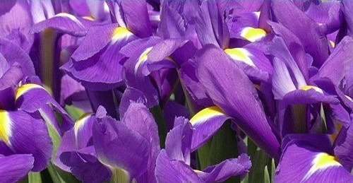
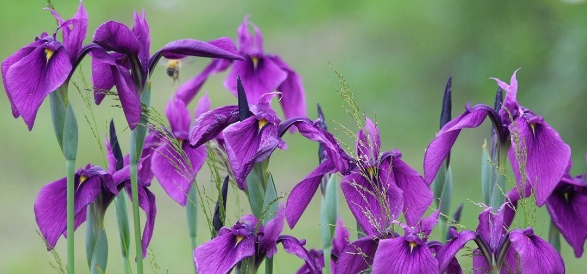
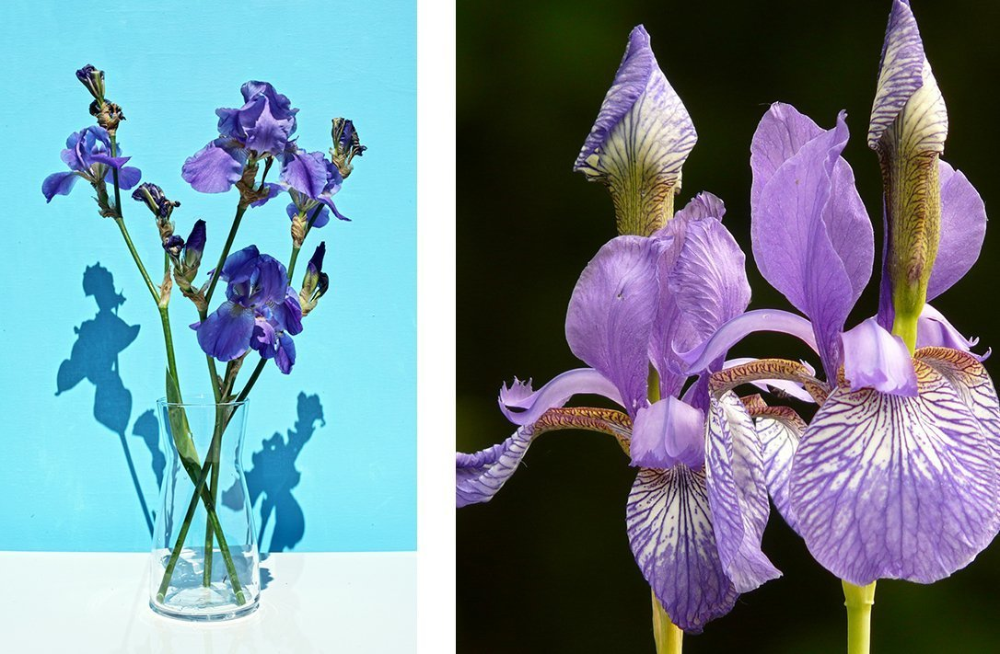

Uzgajanje Perunika
Nema misterije zašto su perunike upadljivi krunski dragulj mnogih vrtova. Njihove prelepe latice u obliku lepeze nežno prekrivaju blistavo zeleno lišće. Iako mnogi od nas zamišljaju plavo, indigo i žuto lišće klasičnog irisa, naziv „Iris“ zapravo potiče od grčke reči za dugu, što svedoči koliko se raznolike boje mogu naći u ovim biljkama. Sa toliko boja i tako fenomenalnim lišćem i cvetovima, postoji iris koji će se svakom svideti.
Uzgajanje perunika: šta su krtole?Perunike rastu malo drugačije od mnogih drugih biljaka u vašoj bašti. Iako ih tehnički možete uzgajati iz semena kao i drugo cveće, najpreporučljiviji i najdirektniji način da dobijete perunike za svoju baštu je iz lukovica.
Perunike rastu iz rizoma, horizontalne stabljike koja je zaobljena i nabubrena pod zemljom. Mnogi baštovani su upoznati sa krtolama u hrani koju jedu, kao što je krompir ili jam. Perunike nastaju pucanjem korena i stabljika iz gomolja.
Sadnja gomolja irisa Perunike više vole mnogo sunca da bi podstakle svoje nežno cvetanje koje se zaustavlja, tako da ih je najbolje saditi sredinom ili krajem leta na mestu koje ima puno sunca tokom dana. Najmanje pola dana punog, vrelog sunca im je važno da rastu i izgledaju najbolje. Posadite svaku gomolju na udaljenosti od oko 12” tako da svaki cvet ima prostora koji mu je potreban za dobru cirkulaciju vazduha. Što više sunca i vazduha dobije, to će više sijati u vašoj bašti.
Posebno vodite računa da zaštitite rizome perunike od vlage i truleži da biste imali uspešno prikazivanje ovih cvetova. Izaberite zemljište koje dobro drenira ili dopunite svoje peskom kako biste bili sigurni da koreni ne sede u vodi, što ih može oštetiti.
Koraci za sadnju perunika
Proverite svoj krtol da biste bili sigurni da je zdrav. Izbegavajte znake truleži kao što su mekane posude, miris ili osećaj šupljine. Razočaravajuće je uložiti napore u uzgoj prelepe perunike da biste imali samo ništa.
Iskopajte široku i plitku rupu (oko 10" široke i 4" duboke) u dobro dreniranom zemljištu Postavite gomolj u rupu na stranu, sa korenom okrenutim nadole. Raširite korenje oko gomolja.
Popunite rupu, ali ostavite vrh gomolja malo izložen tako da ima pristup suncu i vazduhu koji mu je potreban da ostane suv.
Nakon sadnje dobro zalijte, ali samo povremeno zalijte da biste izbegli truljenje. Nemojte malčirati, ali razmislite o posipanju đubriva sa niskim sadržajem azota.
Uz malo strpljenja i redovnog održavanja, imaćete prekrasan cvet koji je spreman da impresionira!
Briga o perunikama Ako odvojite vreme da budete pažljivi oko sadnje gomolja, briga o rastućoj perunici je zapravo vrlo jednostavna. Lagano zalivajte i držite ih izložene punom sunčevom svetlu i ove biljke obavljaju sve teške poslove umesto vas.
Procvetale perunike su blagoslov u vašem pejzažu, sa složenim i delikatnim cvetovima koji privlače pažnju. Cenite ih u svojoj bašti ili ih isecite i unesite unutra - ovo predivno cveće je poslastica koja privlači vašu pažnju gde god da ih postavite.
Na kraju sezone kada je cvetanje završeno, oduprite se želji da ih podrezujete i odmah očistite. Ostavljanje lišća netaknuto omogućava biljci da nastavi da sakuplja sunce i dobije hranu koja joj je potrebna da preživi zimu i ponovo cveta u proleće. Možete da isečete cvetnu stabljiku sve do gomolja ako želite, ali ostavite listove što duže možete - ulažete u svoje buduće perunike!
Krtole bi mogle biti malo čudne i zastrašujuće kada prvi put radite s njima, ali zapravo imaju iste potrebe kao i većina vaših baštenskih biljaka. Pod uslovom da pravilno negujete krtole, uskoro ćete uživati u ovim veličanstvenim cvetovima celog leta.